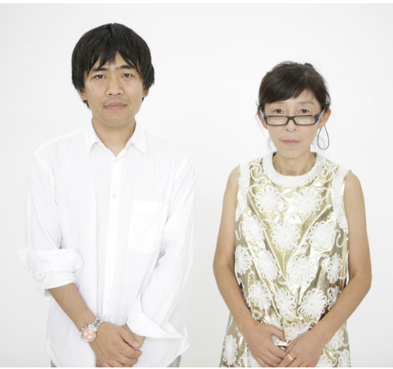
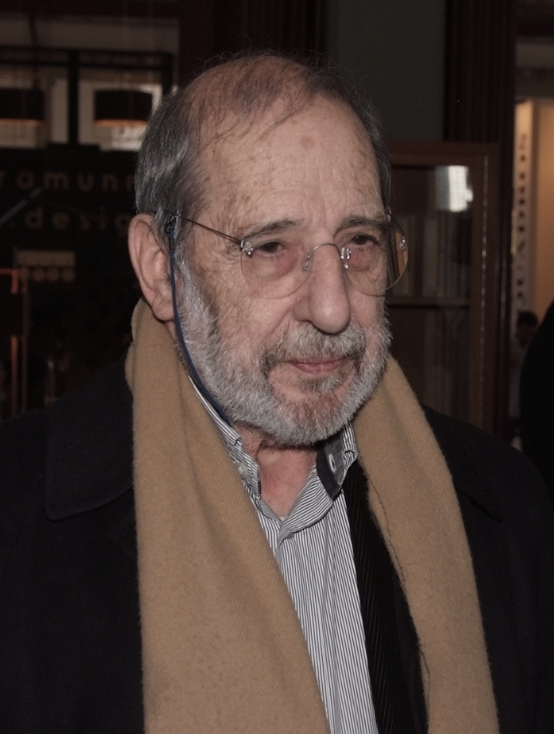
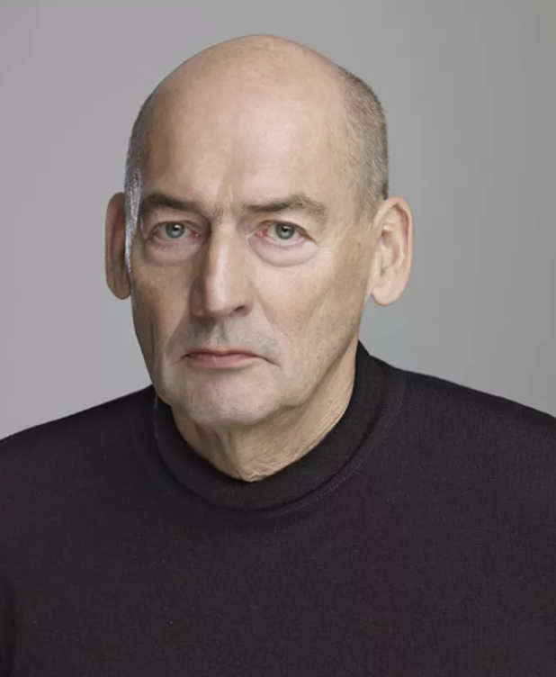

Famous Architect
SANAA
About
Sanaa Architects is a Tokyo-based architectural firm founded by Kazuyo Sejima and Ryue Nishizawa. Renowned for their minimalist and innovative designs, Sanaa has produced iconic structures worldwide, including the Rolex Learning Center in Switzerland and the New Museum in New York City. Their work often integrates transparency, lightness, and fluidity, redefining spatial experiences and emphasizing harmony with the surrounding environment. Sanaa's approach emphasizes simplicity, clarity, and a deep understanding of the relationship between architecture and its users.
Projects
- Grace Farms - New Canaan, Connecticut, USA
- The New Museum of Contemporary Art - New York City, USA
- Rolex Learning Center - Lausanne, Switzerland
- Find out more
Álvaro Siza
About
Álvaro Siza Vieira is a renowned Portuguese architect known for his modernist and minimalist designs. His works are characterized by clean lines, geometric forms, and a deep sensitivity to context and site. Siza's notable projects include the Serralves Museum of Contemporary Art in Porto, the Ibere Camargo Foundation in Brazil, and the Portuguese Pavilion for Expo '98 in Lisbon. He has received numerous awards, including the Pritzker Prize in 1992, for his contributions to architecture that blend innovation with a profound respect for tradition and place.
Projects
- Pavilion of Portugal in Expo'98 - Lisbon, Portugal
- Iberê Camargo Foundation - Porto Alegre, Brazil
- Museu Nadir Afonso - Chaves, Portugal
- Find out more
Rem Koolhaas
About
Rem Koolhaas is a Dutch architect, urbanist, and theorist, noted for his groundbreaking architectural designs and provocative writings. He founded the Office for Metropolitan Architecture (OMA) in 1975. Koolhaas' work often challenges conventional notions of space and function, exploring concepts such as urban density, globalization, and the impact of technology on architecture. Notable projects include the CCTV Headquarters in Beijing, the Seattle Central Library, and the Casa da Música in Porto. His influence extends beyond architecture, shaping discourse on urbanism and culture through his books, lectures, and exhibitions.
Projects
- Maison à Bordeaux - France
- Seattle Central Library - Seattle, USA
- CCTV Headquarters - Beijing, China
- Find out more